08 日常运维：监控、维护、升级、巡检、找谁、事故手册
这一章要解决什么问题：交付后怎么天天跑——看什么信号、每天每周查什么、怎么分批维护和升级、出事翻哪本手册、做不动找谁。 为什么难：平台侧告警不一定比你先发现问题；健康信号会说谎；维护和升级本身会打断切片。检测必须自己做。
- 29 条告警（7 条首个生产任务前必须有）
- 7 种「看着健康」的假象
- ≥132 自触发维护每批之后的健康 cube 下限
- 306 s 日报完整 8 段跑一遍
- A–G 7 本事故手册
变量：
source ~/runbook-env.sh && rb_env_check PROJECT REGION ZONE CLUSTER RESERVATION（全书唯一变量块scripts/env.sh）
- 另用
$BLOCK $NS $CLUSTER_QUEUE $CUBES_SLO $SPARE_CUBES $STATE_DIR；集群是 zonal，一律--location=$ZONE。- 脚本：
scripts/08-alert-sources.yaml（29 条告警同号）、scripts/08-daily-check.sh；复用05-triage-slice.sh、05-isolate-cube.sh、05-delete-slice-chain.sh、05-avoid-manual-slices.py。
8.1监控与告警
本节的告警是散装的。把它们收进一张看板、一套 BigQuery 模型的做法见 08b 可观测性。
先记住：健康信号会说谎
| # | 看起来 | 实际可能是 | 为什么 | 改看什么 | 页 |
|---|---|---|---|---|---|
| 1 | 节点 Ready、partition HEALTHY、单片正常 | 网卡 TX 队列复位，多片任务卡在首次跨片 all-reduce | GVE 约 2 s 自愈 | 串口日志（#8） | 经验教训第 19 条 |
| 2 | sub-block DEGRADED =「坏了」 |
SLO 把 DEGRADED 算健康；K8s 标签却没有 DEGRADED | 节点标签只有 HEALTHY / UNHEALTHY；GCE 的 DEGRADED(15/15) 在 K8s 上是 UNHEALTHY | 两个数都报 | 经验教训第 48 条 |
| 3 | 整点前后一批 sub-block 翻 DEGRADED | 假的：gcp_health_status 每 4 h 在一批 sub-block 上翻 1–3 个采样 |
未定位 | healthyHostCount / degradedInfraCount，连续 ≥5 min（#2） |
经验教训第 48 条 |
| 4 | kubectl get events 里没有驱逐原因 |
Event 被 RBAC 拒掉（events is forbidden … in the namespace "default"，多次打断共数十条） |
Kueue SA 缺权限 | Kueue 日志 jsonPayload.reason（#26、#29） |
经验教训第 54 条 |
| 5 | Slice Ready=Unknown / MMIGHealthProbeFailed |
GCE 读配额打满（429），旧版控制器把健康切片标 Unknown | 每 5 s 轮询每个 MIG/MMIG | 查 429（#7） | 经验教训第 52 条 |
| 6 | 节点池 RUNNING / 预留 sub-block HEALTHY 16/16 | 池里一台 unreachable；预留 HEALTHY 但 FAILURE_INFRA 维护中 |
healthyHostCount 不保证 VM 能落地；partition 标签最多滞后 20 min |
逐 cube 对账（§8.4） | 经验教训第 48 条 |
| 7 | JobSet Completed |
0 步就退了：致命错误被包成 StopTraining 后 exit 0 |
— | step 数与检查点数（#17） | 经验教训第 44 条 |
判据：
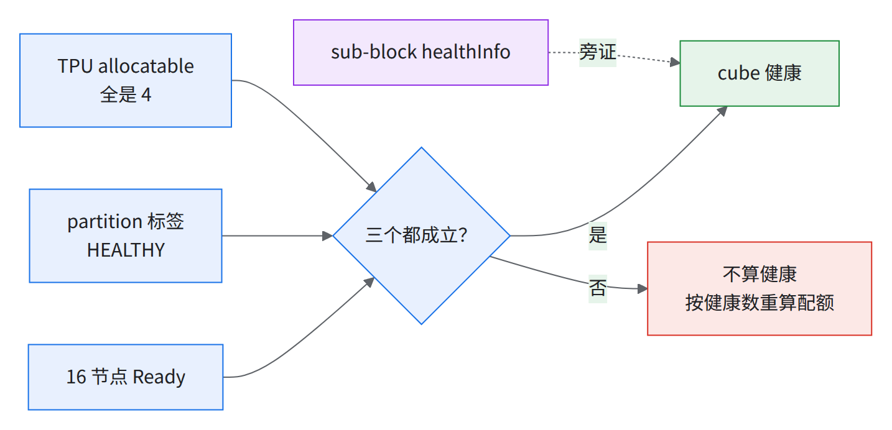
读图：单一信号都不能判好 源组合方式为推断。
告警总表
- 加粗 7 条 = 首个生产任务前必须有；★ 3 条 = 恢复测试漏看、代价以小时计 [推断]。阈值是起点，前两周调。
- 数据源：K kubectl、P PromQL、L Cloud Logging、G gcloud 轮询；查询与前提（串口日志先开、
:8443抓取）见08-alert-sources.yaml同号条目，「日报」=08-daily-check.sh已覆盖。怎么建成策略见下文「把 10 条必备告警建成策略」。MMIG、HDB 见术语表。
| # | 信号 | 数据源 | 阈值 | 动作 | 页 |
|---|---|---|---|---|---|
| 1 | 健康 cube 数 | K 日报；08-daily-check.sh --probe 每 5–10 min（退出码 2 page、1 通知） |
< SLO 线+2 持续 10 min 通知；< SLO 线 page | §8.6-A | 经验教训第 3 条、经验教训第 33 条 |
| 2 | sub-block healthyHostCount / degradedInfraCount 变化 |
G 每 5 min 存一份做 diff | 同一行连续 2 次不同；忽略 gcp_health_status |
对到 cube → §8.6-A | 经验教训第 48 条 |
| 3 | 全 pod 同时变状态 | L 节点 patch 审计 | 10 min 内 ≥20 cube | 当一个事件：§8.6-F | 经验教训第 49 条 |
| 4 | Slice 停在 ACTIVATING / DEACTIVATING / INCOMPLETE | P accelerator_slice_state；K 日报 |
DEACTIVATING / INCOMPLETE > 15 min page（正常 p50 33 s）；ACTIVATING > 15 min 通知，> 60 min page；ACTIVE_DEGRADED 任意一次即通知（实测从不回到 ACTIVE，见 05 §5.6） |
§8.6-B | 经验教训第 39 条、经验教训第 35 条 |
| 5 | Slice Ready=Unknown / MMIGHealthProbeFailed |
K；L slice-controller-system | > 10 min | §8.6-G，别批量删 | 经验教训第 52 条 |
| 6 | Slice FAILED 且 Workload 没被驱逐 | P / K 日报 | > 10 min | 删 JobSet 重提（05 §5.6） | 经验教训第 39 条 |
| 7 | GCE API 429、读配额 / multi-MIG 配额用量 | P serviceruntime | 429 持续 5 min；用量 > 70% | §8.6-G | 经验教训第 52 条、经验教训第 5 条 |
| 8 | 串口 NETDEV WATCHDOG / gve … Performing reset |
L 串口日志（要先开） | 任意一次 | §8.6-E | 经验教训第 19 条 |
| 9 | Ready 节点 google.com/tpu ≠ 4 或带 TPU_UNALLOCATABLE taint |
K 日报 | > 10 min | 查 device plugin；持续则隔离 cube | 经验教训第 11 条 |
| 10 | 节点 Ready+HEALTHY 却 unschedulable |
K 日报 | > 30 min | 查谁 cordon 的 | 经验教训第 50 条 |
| 11 | GCE 实例 REPAIRING、自动修复次数 | G 日报 / P | REPAIRING > 1 h；每池每天 > 5 次；> 12 h 升级 | §8.5「维修卡住」 | 经验教训第 3 条 |
| 12 | 缺 partition-id / topology / chip-ids 标签，或某 partition 下 ≠16 节点 | K 日报 | 任意 | 找 Google 要 relabel | 经验教训第 50 条 |
| 13 | Kueue / kueue-slice-controller / JobSet 重启、OOM、NotReady | P container_restart_count |
任意 | 看日志 | 经验教训第 28 条 |
| 14 | Workload 已准入却没 Slice；或 Pending 且 excluded = 全部节点 | K | > 15 min | 多半手工片：§8.6-B | 经验教训第 33 条 |
| 15 | 泄漏对象：孤儿 Slice、悬空 multiMig、卡 Terminating 的 pod |
K；05-delete-slice-chain.sh --scan-orphans |
夜间发现即报 | 按经验教训第 40 条顺序清 | 经验教训第 40 条、经验教训第 41 条 |
| 16 | 节点池 PROVISIONING / RECONCILING | G 日报 | > 45 min | 15/16 流程 | 经验教训第 9 条 |
| 17 | 训练 N 分钟无新 step；Completed 但 0 步 | L 容器日志（textPayload 或 jsonPayload.message，只拉前者全漏） |
N = 2×(step+检查点耗时)；第一条 completed step: 后才上膛（或 pod 起来 60 min 后）：实测到 step 0 要四十多分钟（06c §6.6） |
§8.6-C | 经验教训第 44 条 |
| 18 | 一片 / 一台 host 掉队 | P tensorcore 利用率、collective 延迟；每周 soak | 按功耗档分开（见下） | 先取证再重建 JobSet | 经验教训第 45 条 |
| 19 | 每个整 pod（144 cube 整池）每天中断次数（按原因分类） | P node_interruption_count |
> 2（目标约 1.2） | 周报里看趋势 | — |
| 20 | 维护 scheduled / started / completed | L 审计 | 任意（通知） | §8.2 | 经验教训第 51 条 |
| 21 | 节点注册 CSR AutoDenied |
K | 任意 | 找 Google | 经验教训第 41 条 |
| 22 | 集群 pod 总数 / apiserver 5xx | P / K 日报 | > 100k（上限 200k） | 删完成态 pod，补 ttlSecondsAfterFinished |
经验教训第 53 条 |
| 23 | tpu-device-plugin / vbar-control-agent 重启 | P | 1 h 内 > 1% 节点 | 多半是控制面升级：§8.3 | 经验教训第 51 条 |
| 24 | Released PV / HDB 配额用量 | P / G | > 80% | 清 PV；提配额 | 经验教训第 5 条、经验教训第 21 条 |
| 25★ | TPU 节点 NodeHasDiskPressure / EvictionThresholdMet |
L log_id("events")；K events |
任意一次 | §8.6-D | 经验教训第 42 条 |
| 26★ | Kueue 驱逐（EvictedDueToNodeFailures / …AdmissionCheck / Preempted） |
L kueue-system jsonPayload.reason；K 日报（24 h 计数） |
通知；同一 Workload 1 h 内 ≥3 次 page [推断] | 按 reason 走 §8.6-A / D | 经验教训第 54 条 |
| 27★ | 一片的 pod 撒到多个 cube（conflicting rank） |
L kueue-system jsonPayload.error；K 分区一致性检查 |
任意一次 | §8.6-C（别等 12 min 超时） | 经验教训第 42 条 |
| 28 | 手工 Slice（无 owner 注解）存在 | K 日报 | 存在 > 24 h 或与 Kueue 任务共用 cube [推断] | 找主人删；提交加避让 | 经验教训第 33 条 |
| 29 | Kueue 写 Event 被拒（events is forbidden） |
L；kubectl auth can-i |
任意 | 补 RBAC，之后留作回归告警 | 经验教训第 54 条 |
指标名出自 [https://cloud.google.com/monitoring/api/metrics_kubernetes]、[https://cloud.google.com/kubernetes-engine/docs/how-to/tpus]、[https://cloud.google.com/kubernetes-engine/docs/how-to/kube-state-metrics]；PromQL 名 kubernetes.io/node_pool/status → kubernetes_io:node_pool_status。GKE 系统指标比 kubectl 慢 2–3 min（每 60 s 采样、最多 120 s 可见）。
📊实测29 条各跑一次，三类问题 yaml 已改：
kube_*整类无数据（托管 kube-state-metrics OOM），#13 和 #17 的备用查询（yaml 里的alt）、#22、#24 永不报 → 加absent()元告警，限额找 Google 调。min_over_time(x[15m]) == 1一个样本就成立 → #4 / #6 / #16 已加count_over_time(...) >= 14。- k8s_node 无
node_pool_name标签：#11 的备用查询和 #18 塌成一条全集群序列。
把 10 条必备告警建成策略（未实测）
加粗 7 条 + ★ 3 条的建法。下面的模板没在任何集群上建过，上线前先在测试项目建一条看能否触发。
| # | 建法 | 负责人（角色） |
|---|---|---|
| 1、9 | 不建策略：08-daily-check.sh --probe / 完整版挂 cron，退出码接通知 |
使用方 SRE |
| 5 | 同上（kubectl 主路）；或用 yaml 里的 alt 日志过滤器走下方模板 B |
使用方 SRE |
| 4、13 | 模板 A（PromQL） | 使用方 SRE 建，查询从 yaml 抄 |
| 8、25、26、27 | 模板 B（日志匹配） | 同上 |
| 17 | 先 gcloud logging metrics create 建计数指标，再建「N 分钟无数据」策略；上膛条件（第一条 completed step: 后）策略本身做不到，要人工启用或按 JobSet 分建 [推断] |
同上 |
- 工时没估：要使用方 SRE 按上表自己估，排期见 09。
- 查询原文一律从
08-alert-sources.yaml同号条目的primary抄，$CLUSTER/$PROJECT/$NS换成真值。
模板 A（PromQL 条件，以 #4 page 为例）：
# alert-04.yaml —— 未实测
displayName: "#4 Slice DEACTIVATING/INCOMPLETE > 15m"
combiner: OR
conditions:
- displayName: "#4 page"
conditionPrometheusQueryLanguage:
query: |
<08-alert-sources.yaml id: 4 primary.query 原文>
evaluationInterval: 60s # 须为 30 s 的倍数
notificationChannels: ["<通知渠道全名，见下>"]
模板 B（日志匹配，以 #25 为例）：
# alert-25.yaml —— 未实测
displayName: "#25 DiskPressure"
combiner: OR
conditions:
- displayName: "#25"
conditionMatchedLog:
filter: |
<08-alert-sources.yaml id: 25 primary.filter 原文>
alertStrategy:
notificationRateLimit: {period: 300s} # 日志型策略必填
notificationChannels: ["<通知渠道全名>"]
gcloud beta monitoring channels list --project=$PROJECT --format='value(name,displayName)' # 渠道全名；本地 gcloud 里 channels 只有 alpha/beta
gcloud monitoring policies create --policy-from-file=alert-04.yaml --project=$PROJECT
gcloud monitoring policies list --project=$PROJECT --format='value(displayName,enabled)' # 验证
- 字段名核过 alertPolicies REST 参考 [https://cloud.google.com/monitoring/api/ref_v3/rest/v3/projects.alertPolicies]；
policies create --policy-from-file在本地 gcloud--help里有。能否建成、能否触发都未实测。 - 回滚：
gcloud monitoring policies delete <策略名> --project=$PROJECT。
掉队阈值要按功耗档分开
默认档和 P7 的跨 host 离散差一个数量级（同一批 host 上默认档、P7 交替跑的 ABBA 对照）：
| 功耗档 | 跨 host 极差 =（最高 − 最低）÷ 中位，单次运行；括号里是两次运行合起来的 min–max（bf16 N=32768，折算每芯片） | 逐 host 固定吗 | 建议判据 [推断] |
|---|---|---|---|
| 默认（P3） | 4x4x4 0.7%（1,802–1,815）；4x8x8 0.8%（1,802–1,817） | 否（噪声） | 低于同片中位 > 2% 疑似掉队 |
P7（--xla_tpu_dvfs_p_state=7） |
4x4x4 约 6%（1,821–1,926）；4x8x8 约 7%（1,808–1,939） | 是：两次逐 host 相关 1.00 / 0.999 | 和这台自己的 P7 基线比，偏离 > 2% 报；跨 host 只报 > 8% |
| P7 下的 fp8 | 不到 2%，两次相关 −0.26 / −0.14 | 否 | 同默认档 |
- P7 离散大：满载时被功耗 / 散热顶住，每台涨幅固定；最慢那台（4x8x8、bf16 N=32768，同一台 host 自比）P7 1,808 vs 默认 1,807；两种模式各取最慢 host 相比（1,802 → 1,808）的话，比的不是同一台 源「功耗顶住」为推断。
- 片级掉队：拖后腿那片 collective 延迟最低、duty cycle 最高（按片看这两项找慢片，见经验教训第 45 条）。准入、周期测、在岗发现到送修的整条流程见 08a 慢节点标准流程。
- 训练中只有分钟级
tensorcore_utilization和container/multislice/*延迟；逐 host 靠每周 soak（04-bench/c1_chip_bench.py，P7 阈值见thresholds.csv）。容器内读不到功耗 / 频率 / 温度（vfio，tpu_throttle_score为空）。
要存的 Cloud Logging 查询
纪律（恢复测试复盘换来的）
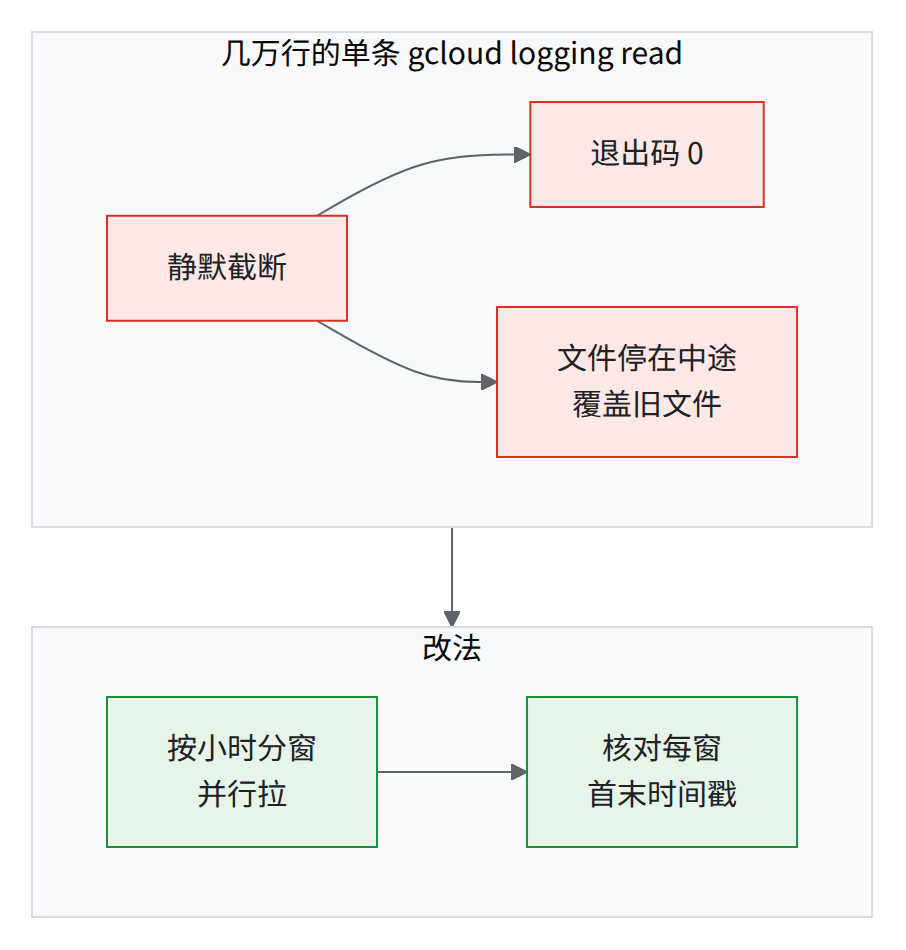
读图：退出码 0 ≠ 拉全。查询都带 resource.labels.cluster_name 和 resource.type，否则太慢。
| # | 用途 | 过滤器 | 状态 |
|---|---|---|---|
| Q1 | 训练容器日志（按 JobSet，每 replica 的 worker-X-0） | resource.type="k8s_container" AND resource.labels.container_name="jax-tpu" AND resource.labels.pod_name=~"^<JOBSET>-worker-[0-9]+-0-" AND timestamp>="<T0>" AND timestamp<"<T1>" |
复盘原样跑通（日志按时间窗分段拉、核对首末时间戳，见经验教训第 54 条） |
| Q2 | 全部 pod 的关键行 | Q1 去掉 -0- 限定，加 (textPayload=~"<K>" OR jsonPayload.message=~"<K>")，K = TPU initialization|barrier|completed step|Traceback|SIGTERM|restore|… |
复盘原样跑通（K 全文见表下） |
| Q3 | Kueue 驱逐原因 | resource.type="k8s_container" resource.labels.cluster_name="$CLUSTER" resource.labels.namespace_name="kueue-system" resource.labels.container_name="manager" jsonPayload.reason=~"^Evicted" |
字段名与复盘时导出的驱逐日志核对过；过滤器原文未留存 |
| Q4 | Kueue rank 冲突 | 同 Q3 前三项 + jsonPayload.error:"conflicting rank" |
字段名与复盘时导出的 Kueue 日志核对过（报错来自 tas/topology_ungater.go） |
| Q5 | Kueue Event 被拒 | 同 Q3 前三项 + jsonPayload.message:"events is forbidden" |
字段名与复盘时导出的驱逐日志核对过 |
| Q6 | kueue-slice-controller 日志 | resource.type="k8s_container" resource.labels.cluster_name="$CLUSTER" resource.labels.namespace_name="slice-controller-system" resource.labels.container_name="manager"（再加 "<slice 名>" 全文） |
资源标签与复盘时导出的切片控制器日志核对过 |
| Q7 | 节点事件（DiskPressure、NotReady…） | log_id("events") resource.labels.cluster_name="$CLUSTER" jsonPayload.reason=("NodeHasDiskPressure" OR "EvictionThresholdMet" OR "NodeNotReady" OR "KernelDeadlock" OR "ReadonlyFilesystem") |
reason 取自复盘时导出的节点事件；写法 |
| Q8 | 谁停 / 删了 VM | 注 1 | 注 1 |
| Q9 | 切片审计（谁建 / 删了它） | protoPayload.resourceName:"accelerator.gke.io/v1beta1/slices/<name>" |
|
| Q10 | partition 状态历史 | 审计 protoPayload.methodName="io.k8s.core.v1.nodes.patch"，读 protoPayload.response.metadata.labels."cloud.google.com/gke-tpu-partition-4x4x4-state" |
|
| Q11 | 缺货 | 注 2 | |
| Q12 | 维护 | protoPayload.methodName="compute.reservations.CAPACITY_COMPONENT.startGroupMaintenance"（另有 upcoming… / completed…；CAPACITY_COMPONENT = reservations | reservations.blocks | reservations.blocks.subblocks） |
|
| Q13 | MMIG detach 审计 | resource.type="gce_instance_group_manager" protoPayload.methodName="v1.compute.instanceGroupManagers.patch" protoPayload.request.multiMig="" |
|
| Q14 | GKE 托管 slice controller | logName="projects/$PROJECT/logs/slice-controller" AND textPayload=~"<slice>" |
官方指南写法；使用方项目能否查到 [需验证] |
Q2 的 K 全文（复盘时原样用过的，按需增删）。Restor、oordination 这种半截词是有意的：子串匹配能同时命中 Restore / Restoring、Coordination / coordination。
(TPU backend|TPU initialization|barrier|Barrier|restore|Restor|completed step|heartbeat|unhealthy|fatal|Terminating|replicator|Traceback|Error|MTC|Found a|signal|SIGTERM|preempt|oordination|Aborted|train.py_initialize|jax.devices|Total memory|checkpoint)
- 注 1（Q8，查谁停 / 删了 VM）：实测审计日志里删 VM 的 methodName 是
v1.compute.instances.delete；下面用:做子串匹配、一次查删 / 停 / 模拟维护三种，这个写法没跑过 [推断]：
log_id("cloudaudit.googleapis.com/activity") resource.type="gce_instance" protoPayload.methodName:("instances.delete" OR "instances.stop" OR "simulateMaintenanceEvent")
- 注 2（Q11，查缺货：建 / 改节点池时报
TPU_OUT_OF_RESOURCES_RESERVATION）：
log_id("cloudaudit.googleapis.com/activity") resource.type="k8s_node" resource.labels.cluster_name="$CLUSTER" protoPayload.methodName:("CreateNodePool" OR "UpdateNodePool") protoPayload.status.message:"TPU_OUT_OF_RESOURCES_RESERVATION"
- 实测集群没开
API_SERVER（告警 #22 要）；--monitoring给的是全集，会覆盖原设置 [https://cloud.google.com/kubernetes-engine/docs/how-to/configure-metrics]：
gcloud container clusters describe $CLUSTER --location=$ZONE --format='value(monitoringConfig.componentConfig.enableComponents)' # 先抄下现值
gcloud container clusters update $CLUSTER --location=$ZONE --enable-managed-prometheus \
--monitoring=SYSTEM,API_SERVER,STORAGE,HPA,POD,DAEMONSET,DEPLOYMENT,STATEFULSET,CADVISOR,KUBELET,JOBSET
- 验证：再 describe 多了 API server 项（
SYSTEM显示为SYSTEM_COMPONENTS）；查得到apiserver_request_total。幂等。回滚：用抄下的原值再 update。
可用信号的全集
| 信号 | 说明 |
|---|---|
| GKE 系统指标 | accelerator/slice/{state,formation_durations,deformation_durations}、accelerator/partition/state、jobset/assigned_slices |
| kueue-slice-controller | tpu_ac_*（只有名字没有语义） |
| ML Diagnostics | GKE ≥1.36.0-gke.4447000 自动开（实测集群 managedMachineLearningDiagnosticsConfig.enabled: true） |
| Google 侧 SLO 告警 | 使用方看不到，自己盯 formation/deformation 时长 |
监控本身也会弄坏 TPU
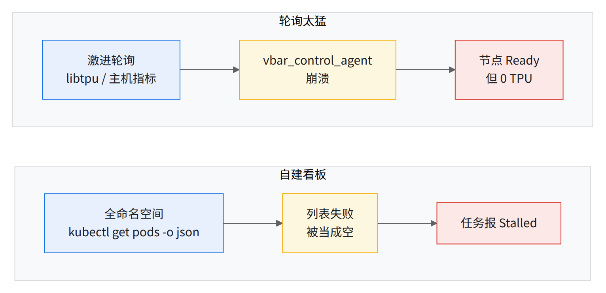
读图：轮询间隔 ≥30 s；列表失败不能当空（先例：大集群的 pod 列表超时，一批任务被误报为 Stalled）。
本节可能踩到的问题：健康信号各说各话 · 主机网卡反复重置 · GCE 读配额被打满 · core dump 撑满启动盘被驱逐 · 组件版本低于下限 · 控制面容量 · 泄漏与孤儿对象静默吃容量 · 删除卡住 · 存储类型与持久卷 · 训练挂住不报错 · 一片慢拖全局 · 修回的主机又坏 / 标签丢失 · 切片激活慢或超时 · 可观测性盲区 · 从检查点恢复后变慢（premap） · 性能对比结论站不住
8.2主机维护
自触发维护 = 自己分批触发维护。两类（GROUPED = 分组维护）：
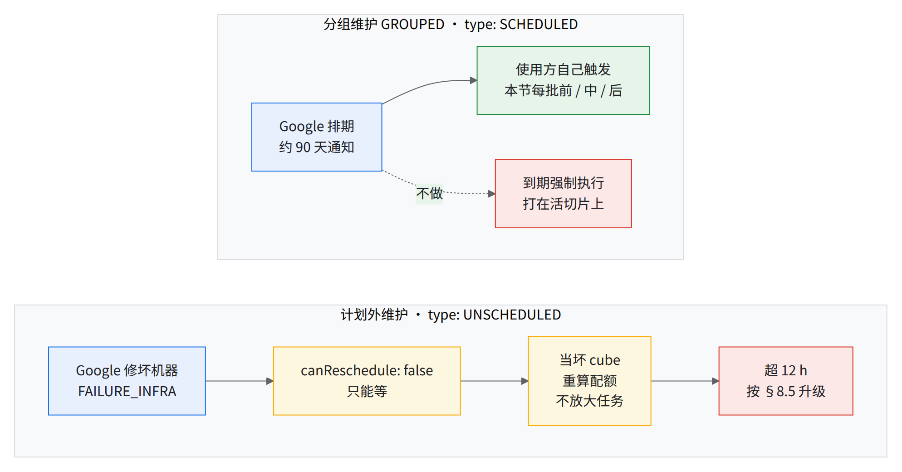
- 计划外维护（
maintenanceReasons: [FAILURE_INFRA]）期间，sub-block 上可能还跑着任务。部分主机侧 bug 修复只能靠自触发维护生效，分组维护别拖到强制执行。
⚠️GKE 维护例外挡不住 GCE 主机维护；不要用节点上的
perform-maintenance标签。
列出待办维护（只读；字段路径取自快照）：
# reservation 级 / block 级：总计数 + upcomingGroupMaintenance
gcloud compute reservations describe $RESERVATION --zone $ZONE --project $PROJECT --format='yaml(resourceStatus.reservationMaintenance)'
gcloud compute reservations blocks describe $RESERVATION --block-name $BLOCK --zone $ZONE --project $PROJECT --format='yaml(resource.reservationMaintenance)' # describe 输出外包一层 resource:，旧写法实测输出 null
# sub-block 级：一行一个，看哪些能自己触发（sub-block 的字段叫 reservationSubBlockMaintenance）
M=reservationSubBlockMaintenance
gcloud compute reservations sub-blocks list $RESERVATION --block-name $BLOCK --zone $ZONE --project $PROJECT \
--format="table(name.basename(),$M.upcomingGroupMaintenance.maintenanceStatus:label=STATUS,$M.upcomingGroupMaintenance.type:label=TYPE,$M.upcomingGroupMaintenance.canReschedule:label=CAN_TRIGGER,$M.upcomingGroupMaintenance.windowStartTime:label=WINDOW_START,$M.maintenancePendingCount:label=PENDING,$M.maintenanceOngoingCount:label=ONGOING)"
# VM 级（单台）
VM=<VM 名> # = TPU 节点名（GKE 节点名就是 GCE 实例名）：kubectl get nodes -l cloud.google.com/gke-tpu-accelerator=tpu7x
gcloud compute instances describe $VM --zone $ZONE --project $PROJECT --format='yaml(resourceStatus.upcomingMaintenance)'
-
读法：
STATUS=PENDING且CAN_TRIGGER=True才能自己触发；VM 级为空 = 没排期 [https://cloud.google.com/compute/docs/instances/monitor-plan-host-maintenance-event]。全量扫 VM：
gcloud compute instances list --filter="zone:($ZONE) AND resourceStatus.upcomingMaintenance.maintenanceStatus:*"（是否带回resourceStatus[需验证]）。 -
sub-block ↔ 池 ↔ 节点：节点标签
cloud.google.com/reservation-subblocks的值是 sub-block 全名。值的格式是<reservation>-block-<B>-subblock-<S>（<B>是 4 位 block 号，<S>是 4 位 sub-block 编号），所在池名带同样两个编号。按 sub-block 查节点：kubectl get nodes -l cloud.google.com/reservation-subblocks=<sub-block 全名> -L cloud.google.com/gke-nodepool,cloud.google.com/gke-tpu-partition-4x4x4-id
每批的前 / 中 / 后（第 6 步「还原」做完才开下一批）源顺序为推断：
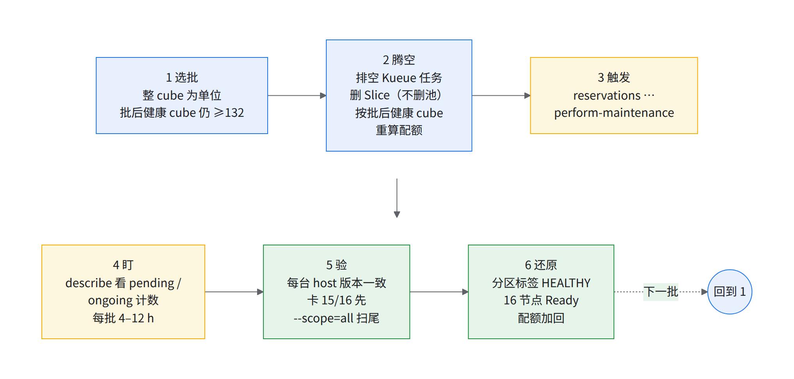
| 阶段 | 补充 | 为什么 / 先例 |
|---|---|---|
| 1 选批 | 132 = 130 SLO + 2 缓冲，通常每批 4–8 个 [推断] | 二十多 cube 一批：可调度跌到一百二十出头，几十台超 9 h、大部分进重装；大批次检修有主机没回来的先例 |
| 2 腾空 | 05-isolate-cube.sh --execute；窗口告诉 Google |
删池丢主机映射，首次前请 Google 书面确认（注 1）；免得 4 h 告警静默掩盖真掉线 |
| 3–4 | 命令见下 | 不能撤回 |
| 5 验 | 扫尾先例里大多数恢复了 | 重建池无效，1:1 映射总落回掉队主机；混版本会打断 sub-slicing（见经验教训第 51 条、经验教训第 29 条） |
| 6 还原 | 日报「Ready 但 TPU≠4」= 0 → --undo --execute；回不来的当坏 cube（§8.6-A） |
- 注 1：公开文档「删池」限定静态多主机切片池；动态切片按 GA 指南「deform the slice before triggering maintenance」源https://docs.cloud.google.com/tpu/docs/all-capacity-maintenance-events。
触发（原样；sub-block 级没有 --scope）：
# 不可撤回：先确认 PROJECT / RESERVATION / SB 指向的是你以为的那个（gcloud config get project 不算数，命令里显式写 --project）
SB=<sub-block 名> # 上面 sub-blocks list 第一列里 STATUS=PENDING 且 CAN_TRIGGER=True 的那行
gcloud compute reservations sub-blocks perform-maintenance $RESERVATION --block-name $BLOCK --sub-block-name $SB --zone $ZONE --project $PROJECT
# 更大范围：
gcloud compute reservations blocks perform-maintenance $RESERVATION --block-name $BLOCK --scope=all --zone $ZONE --project $PROJECT # --scope 三选一：all / running / unused
gcloud compute reservations perform-maintenance $RESERVATION --zone $ZONE --scope=all --project $PROJECT # 同上，三选一
blocks/sub-blocks的 describe、list、perform-maintenance 在 Cloud SDK 587.0.0 是 GA（gcloud compute reservations blocks --help/sub-blocks --help；--help里同时列出 alpha / beta 变体）；老版本 SDK 报「Invalid choice / unknown command」就加beta或先升级；blocks行的--zone是本书补的 [推断]。- 验证：
STATUS变ONGOING。幂等：再跑被拒 [推断]。回滚：没有。断电恢复时积压升级会被强制打上。
本节可能踩到的问题：主机维护与 GKE 升级打掉切片 · 硬件过了出厂检测仍出问题 · sub-slice 建不起来 · 电力事件后报缺货
8.3GKE 与软件升级
谁跟谁绑在一起：
| 升什么 | 顺带变了什么 | 对在跑切片的影响 | 怎么做 |
|---|---|---|---|
| GKE 控制面 | 托管 slice controller、tpu-device-plugin 被悄悄滚动（allocatable 掉到 0，约 20 min） | 在跑的切片可能卡死、任务失败 | 第 2、3 步 |
| 节点池（= 节点镜像） | 节点 GKE 版本、COS、device plugin、网卡修复等 | 该 cube 上 ACTIVE 切片变 FAILED 且不恢复 | 逐 cube 先删切片（第 4 步） |
| 需重建池才生效的修复 | 网卡修复、多网卡、workload policy | 同上 | 按自触发维护批次逐 cube 重建 |
| kueue-slice-controller（自装） | 镜像 tpuongke/kueue-slice-controller，钉 digest。实测用的 v0.8.0-200 不含恢复路径修复（要含修复的版本 + kueue-tpu-ac 新版本（版本号以 Google 确认为准），07 §7.2）；交付前升级并重跑 07 演练，版本结论见 09 D10 |
全集群单点，重启期间不建 / 不删切片 | 改 03-slice-controller.yaml 的 digest 再 apply；别用 latest |
| Kueue / JobSet（Helm） | KUEUE_VERSION 钉 0.18.x（≥0.18.5）；JobSet CRD 不随 helm upgrade 更新 |
重启控制器；非 TAS pod 的 TAS 缓存修复最早出现在 0.15.3 / 0.16.1，那是首个含修复的版本，不是本书要求的下限（下限仍是 ≥0.18.5） | 03-addons.sh kueue / jobset；回滚 03-addons.sh rollback-kueue <REV>（手工 patch 不在 Helm 历史里） |
| jax / libtpu / 镜像 | 数值、集合通信性能 | 0.0.48 在 2x4x4 上并行 all-gather 带宽减半；0.0.47 改了 batched-dot 数值 | 钉 digest；升前跑数值 + collective 金丝雀（04 §4.10 C1/C3/C4） |
顺序：
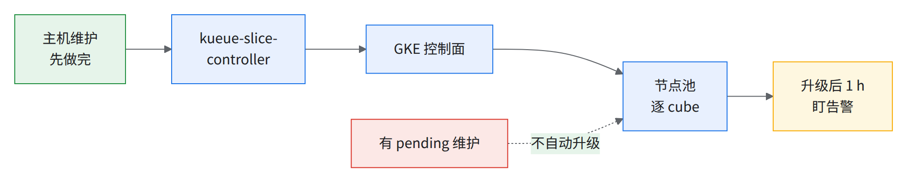
读图：pending 维护挡自动升级、controller 先于控制面各有出处，串成一条是推断。
-
冻结自动升级：集群级「No minor or node upgrades」维护例外（控制面仍打补丁；手动升级无视例外）；实测集群池
autoUpgrade: true、无此例外。flag 核对 [https://cloud.google.com/sdk/gcloud/reference/container/clusters/update; https://cloud.google.com/kubernetes-engine/docs/how-to/maintenance-windows-and-exclusions]：bashgcloud container clusters update $CLUSTER --location=$ZONE --project=$PROJECT \ --add-maintenance-exclusion-name=tpu-node-freeze \ --add-maintenance-exclusion-scope=no_minor_or_node_upgrades \ --add-maintenance-exclusion-until-end-of-support # 不想跟随 end of support 就换成固定终点：--add-maintenance-exclusion-start=<RFC3339> --add-maintenance-exclusion-end=<RFC3339>- 「until end of support」对此 scope 无明文 [需验证]，被拒就用固定终点；自定义镜像池另加池级
gcloud container node-pools update <池> --cluster $CLUSTER --location $ZONE --add-maintenance-exclusion-until-end-of-support（撤销--remove-maintenance-exclusion-until-end-of-support）。 - 验证：
gcloud container clusters describe $CLUSTER --location=$ZONE --format='yaml(maintenancePolicy)'里有tpu-node-freeze。回滚：--remove-maintenance-exclusion=tpu-node-freeze。
- 「until end of support」对此 scope 无明文 [需验证]，被拒就用固定终点；自定义镜像池另加池级
-
确认目标版本还在 channel 里（
--flatten写法 [推断]）：bashgcloud container get-server-config --location=$ZONE --project=$PROJECT --flatten=channels \ --filter="channels.channel=${RELEASE_CHANNEL^^}" --format="value(channels.validVersions)" | tr ';' '\n' | grep -x "$NODE_VERSION"${RELEASE_CHANNEL^^}把 env.sh 的rapid转成 API 里的大写RAPID（bash 4+）；channel 本身未定，见 09 D10。 没打印 = 找 Google 要 allowlist（先例：某个版本在交付 zone 任何 channel 都没有）；同时要捆绑组件版本和变更列表，对照经验教训第 11 条。 -
金丝雀：带真实 cube 的非生产集群先升：
bashCANARY_CLUSTER=<金丝雀集群>; CANARY_ZONE=<它的 zone> # 查：gcloud container clusters list --project=$PROJECT --format='table(name,location)' [[ "$CANARY_CLUSTER" != "$CLUSTER" ]] || { echo "金丝雀集群名和生产相同，停"; exit 1; } gcloud container clusters upgrade $CANARY_CLUSTER --location=$CANARY_ZONE --project=$PROJECT --master --cluster-version=$GKE_VERSION # 先 source env.sh；GKE_VERSION 还是占位 <BOM 里的 GKE 版本> 时别跑；目标版本 = env.sh 的 GKE_VERSION（NODE_VERSION 默认同值，第 2 步核对过在 channel 里） -
节点：按自触发维护同样的批次逐 cube 升：
bashPOOL=<池名> # 例 ${POOL_PREFIX}040 # ① 腾空：同 §8.2 每批流程的第 2 步「腾空」 # ② 升级策略：surge=0（必须）、unavailable=16（推荐） gcloud container node-pools update $POOL --cluster=$CLUSTER --location=$ZONE --project=$PROJECT --max-surge-upgrade=0 --max-unavailable-upgrade=16 # ③ 升级 gcloud container clusters upgrade $CLUSTER --location=$ZONE --project=$PROJECT --node-pool=$POOL --cluster-version=$NODE_VERSION --quiet- 验证：
gcloud container node-pools describe $POOL … --format='value(version,status)'→$NODE_VERSION RUNNING。回滚只限 canceled / failed：gcloud container node-pools rollback $POOL --cluster=$CLUSTER --location=$ZONE[https://cloud.google.com/sdk/gcloud/reference/container/node-pools/rollback]；成功后能否降级 [需验证]，兜底重建该池。
- 验证：
-
升级后 1 h 盯告警 #4、#5、#9、#13、#23 和大批 MMIG 被拆；jax/libtpu 变了就重建掉队基线。
本节可能踩到的问题：主机维护与 GKE 升级打掉切片 · slice controller 单点 · waitForPodsReady 被关掉 · Slice 卡在过渡态 · 改活池 / 活集群的配置会重建或死锁 · 组件版本低于下限 · Cluster Toolkit / Terraform 路径的陷阱 · 一片慢拖全局 · 版本不钉死或 flag 没生效
8.4日常巡检（每天 / 每周）与容量跟踪
容量账
144 cube 里最大任务 ≤128，16 个当备件；Kueue 配额 ≤ min(128, 健康 − S) × 64，HEALTHY 标签数每天重算。
S = 备件数。健康 cube 数先定口径（01 §1.2）；健康数会因维修往下掉，先例中交付后几天内健康数明显下降（经验教训第 3 条、经验教训第 50 条），所以配额每天按健康数重算。
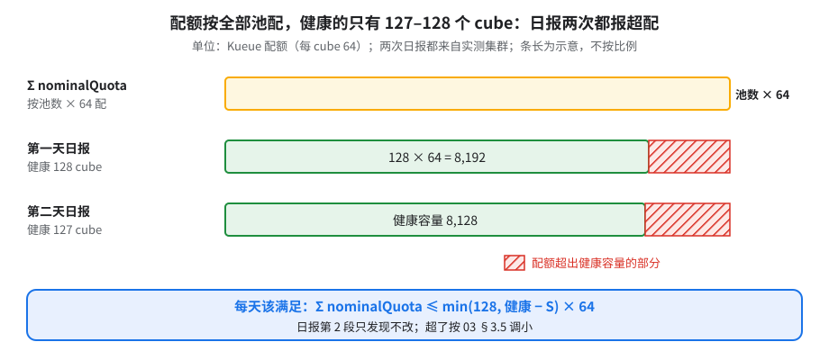
每天
| 查什么 | 怎么查 | 不对时 | 页 |
|---|---|---|---|
| 健康 cube / 备件 / 15/16 / TPU≠4 / cordon | 日报第 1 段 | < SLO 线+2 → §8.6-A | 经验教训第 3 条 |
| Kueue Σ nominalQuota ≤ min(128, 健康 − S) × 64 | 日报第 2 段 | 超了 → 03 §3.5 调小 | 经验教训第 33 条 |
| sub-block 健康分布、有维护的 sub-block | 日报第 3 段 | 对到 cube；UNSCHEDULED 的当坏 cube | 经验教训第 48 条、§8.2 |
| REPAIRING VM、非 RUNNING 池 | 日报第 4 段 | REPAIRING > 12 h → §8.5 | 经验教训第 9 条 |
| 非 ACTIVE ≥60 min 的 Slice | 日报第 5 段 | §8.6-B | 经验教训第 39 条 |
| 手工 Slice（无 owner 注解） | 日报第 5 段 | 找主人删；Kueue 任务加 05-avoid-manual-slices.py |
经验教训第 33 条 |
| pod 总数与完成态占比 | 日报第 6 段 | > 100k → 同告警 #22 | 经验教训第 53 条 |
| 24 h Kueue 驱逐 / rank 冲突 / Event 被拒 | 日报第 7 段 | rank 冲突 → 经验教训第 42 条；被拒 → 补 RBAC | 经验教训第 42 条、经验教训第 54 条 |
| reservation 到期 | 日报第 8 段 | ≤30 / 14 / 3 天各提醒 | 经验教训第 4 条 |
| 维修卡单：卡在 drain / blocked 阶段的主机、卡了多久、挡住哪个 cube | 手工（脚本未覆盖）：维修状态使用方看不到，向 Google 要 | 超过 12 h → §8.5 带「主机 + 时长 + 挡住的 cube」升级；逐台记进下面「已修未回池」日表 | 经验教训第 50 条 |
| 单机限频：throttle 比例、功率传感器读数 | 手工（脚本未覆盖）；可疑主机跑 04-bench.sh gemm / HBM |
读数 > 3 V 或 gemm 远低于基线 → cordon，附 gemm / 读数证据交给 Google | 经验教训第 48 条 |
"$RUNBOOK_DIR"/scripts/08-daily-check.sh # HEALTHY 口径
"$RUNBOOK_DIR"/scripts/08-daily-check.sh --include-degraded # HEALTHY+DEGRADED 口径（实测集群两者输出一样，见下）
- 输出：
$STATE_DIR/daily-<时间>.txt、cubes-<时间>.tsv、slices-notactive-<时间>.tsv（留着算趋势）。只读。文件名 UTC，表头本地时间（带时区）。 - 退出码 1 = 上表任一「不对」，可挂 cron；
$SPARE_CUBES未约定按 0 算。
两次实测都退出 1、都是真告警：健康 cube 低于呼人线，配额超出健康容量；第二次还报出 reservation 剩 0 天、有无主的手工 Slice。完整 8 段 306 s，大头是数几万个 pod 和拉 24 h Kueue 日志。
已修未回池：每天一张表，逐台跟
送修的机器修好后，还可能卡在回池路上，健康 cube 数迟迟不回升。回池由 Google 处理；使用方每天记一张表：
| 列 | 填什么 |
|---|---|
| 机器 / cube | 主机名、所在 sub-block |
| 送修时间 | 本地时间，注明时区 |
| 已过多久 | 现在 − 送修时间 |
| 挡住的 cube 里坏几台 | 只坏 1 台的先催（修 1 台就救回整个 cube） |
| case 号 / ETA | Google 给的；没给就写「无」 |
每周
| 查什么 | 怎么查 | 为什么 | 页 |
|---|---|---|---|
| 容量趋势、坏 cube 原因分布 | 拼一周 cubes-*.tsv |
单日的健康数会因维修上下跳，看一周才分得清是在恢复还是在恶化 | 经验教训第 3 条 |
| 故障率：按症状分类的终止次数 / 每整 pod 每天中断 | 告警 #19 的查询按周汇总 | 目标约 1.2 次 / 天，按整 pod（144 cube）算，不是每个 GKE pod | — |
| 孤儿 multi-MIG / 没有 Slice 的 MMIG 与 WP | --scan-orphans（只读） |
让 cube 不可用、删池卡住；只有 Google 能清 | 经验教训第 40 条 |
| 泄漏 Slice CR（有 owner 注解但 Workload 已不在） | 列出带 owner 注解的 Slice，逐个核对对应 Workload 还在不在（经验教训第 41 条） | partition 永久算「已占用」，表现成假缺货 | 经验教训第 41 条 |
| 删池后 MIG 真没了 | gcloud compute instance-groups managed list --filter="name~gke-$CLUSTER" |
孤儿 MIG 让健康 sub-block 上的新池缺货 | 经验教训第 41 条 |
| 每 cube soak（剔除降频主机、更新掉队基线） | 04-bench.sh C1 + ≥4 min 持续段（注 1） |
Google 遥测漏报过降频主机（先例：HBM 降频未被遥测报出） | 经验教训第 45 条、08a |
| 维护日历：90 天内到期的 PENDING 分组维护 | §8.2 sub-block 表 | 别等强制执行 | 经验教训第 51 条 |
| 版本漂移：host 软件版本、控制器 digest | kubectl -n slice-controller-system get deploy -o yaml | grep image:；host 版本向 Google 要 |
混版本打断 sub-slicing | 经验教训第 29 条、经验教训第 28 条 |
| 配额余量：HDB、读 API、multi-MIG 配额、IP | 01 §1.4 | 读 limit 也读 usage | 经验教训第 5 条 |
- 注 1：C1 没有持续段；gemm_throttling 要
--duration_s=240才到热稳态；P7 对照测试用的 60 s soak要并进 C1 并加长 [推断]。 - 对账可请 Google 出一份逐 cube 健康快照。
本节可能踩到的问题：预留标的 cube 数 ≠ 能用的 cube 数 · 健康信号各说各话 · 泄漏与孤儿对象静默吃容量 · Checkpoint 存储与 MTC · 排队与抢占
8.5出问题找谁
出了问题开 case 交给 Google（同时知会你的 account team），附上下面「升级时附上什么」里的信息。
- 先按 §8.6 止血、取证（遥测会过期），再交给 Google。
- 一个事件开一个 case，别按 cube 拆成很多个。
⚠️坏主机怎么报才不会被送回来
gcloud compute instances report-host-as-faulty；理由里写清症状和证据（报错原文、gemm / 读数）。别只写「请跑 burn-in 确认这台机器正常」——只写这句，主机可能复检通过后被直接送回服务。
升级时附上什么
前 6 项每个 case 必带：
| # | 附件 | 怎么拿 |
|---|---|---|
| 1 | cluster hash、项目编号与名称、region/zone（GKE 项目编号可能 ≠ Google 侧预留项目） | gcloud container clusters describe $CLUSTER --location=$ZONE --format='value(id,selfLink)'；gcloud projects describe $PROJECT --format='value(projectNumber)' |
| 2 | 时间线（开始、频率）、现象、第一行报错原文 | Q1–Q8 |
| 3 | Slice YAML、Workload 条件、两层 controller 日志、切片审计 | 05-triage-slice.sh <slice> --since 2h（整份附 $STATE_DIR/triage-*.txt） |
| 4 | reservation / block / sub-block 状态 | gcloud compute reservations describe $RESERVATION --zone $ZONE --format=yaml；gcloud compute reservations blocks describe … --format=yaml；§8.2 sub-block 表 |
| 5 | 受影响池 / partition / host 清单（loci） | 日报 cubes-*.tsv；kubectl get nodes -l cloud.google.com/gke-tpu-partition-4x4x4-id=<id> -o wide |
| 6 | Kueue 驱逐原因、rank 冲突 | Q3、Q4（events 里可能没有） |
| 7 | 升级 Google 支持时附上：实例 ID / 名、MIG 与 MMIG 名、multiMig 字段 |
05-delete-slice-chain.sh <slice>（dry-run）；--scan-orphans |
| 8 | 缺货：精确错误串（GCE_LOCATION_OUT_OF_RESOURCES|GCE_RESERVATION_OUT_OF_RESOURCE|GCE_RESOURCE_EXHAUSTED|TPU_OUT_OF_RESOURCES|TPU_OUT_OF_RESOURCES_RESERVATION）、operation ID |
Q11 |
| 9 | 硬件：GCE UUID（START_SESSION failed. Contact GCE with UUID: …）、/tmp/tpu_logs/tpu_driver.INFO（worker 0 优先） |
容器日志；经验教训第 43 条 |
- 维修卡单类升级，附上 §8.4「已修未回池」日表当天那几行：主机 + 送修时间 + 挡住的 cube 里坏几台。
- 维修原因目前只给到
FAILURE_TPU/FAILURE_INFRA/hostError这一级，看不出是哪类硬件故障；要细分得单独提需求。紧急修复几乎没有提前量，非紧急的硬件预警有 7 天窗口，所以检查点要按「随时会丢主机」设计 [推断]。
交付前要备好（和 account team 一起定）：按上面附件表写好 case 模板；一线响应人与夜间升级路径。
开 case 与推进升级
- 优先级跟影响走，不跟紧迫感走：交付日被挡、容量掉出 SLA 线标最高级；单台主机变慢但已隔离标低级。
- 不打算要求对方立即响应就别标最高级；拿不准先标次一级，再找 account team 确认。
- 缓解了就主动降级，写清缓解了什么、还剩什么，剩下的拆成后续 case。
- 是你的头号优先级可以要求升级，但要在 case 里写明业务原因。
case 模板（时间线一律 UTC；附件按上表带齐）
## Summary
<一句话：什么规模、什么版本、发生了什么、量化后果>
**Project / Cluster / Zone / Reservation:** <project id> (<number>) / <cluster> / <zone> / <reservation>
## Business Impact
- Scale: <N chips / N hosts / N slices>
- Effect: <step time A s -> B s / job blocked N min / restart costs N min>
- Workaround in place: <yes/no, what>
## Environment
Accelerator / topology, GKE version, libtpu / JAX / framework, relevant flags / configmap
## Timeline (UTC)
| Time | Event |
## Evidence
- Logs (key lines quoted), dashboards / screenshots
- Already ruled out: <isolation test / health check result / ...>
## Root cause (if known) / Hypothesis
<What we think + confidence; "unknown" if unknown>
## Ask
1. <Concrete action: confirm RC / replace host X / raise quota Q from A to B (+Δ)>
2. <Needed by: UTC time + reason>
## Related
<other case IDs>
提交前自检（缺一条就补）
- 标题里有对象（主机 / 预留 / 配额名）和量化现象。
- 有 Business Impact，对方一眼能判断优先级。
- 时间线用 UTC（你和工程师多半不在一个时区，UTC 不会算错）。
- 版本号、flag、configmap 写全。
- 已经排除的写出来（健康检查、隔离实验）。
- Ask 是动作，不是「please investigate」；配额写成 A → B（+Δ），写明单位（QPS 还是带宽）。
- 一个 case 只讲一个问题；多个根因分开开，后续 case 只写增量并引用原 case 号。
- 附件按「升级时附上什么」带齐。
十个反例
| # | 反例 | 教训 |
|---|---|---|
| 1 | 请求本身是误诊：要的功能框架本来就支持，真正原因是自己转换脚本产出的检查点不分片 | 提功能需求前把完整流水线写进去 |
| 2 | 复现器没复现真正问题，数值回归白查一轮（容差口径不同） | 先证明复现的是同一件事；容差和对方测试口径对齐 |
| 3 | 写总量不写增量，风险按总量评估，远大于实际增量 | 写「从 A 到 B（增量 B−A）」，三个数都写 |
| 4 | 问题分错类，空等 4 h 以上 | 开 case 时选对产品类别 |
| 5 | 不打算要求立即响应却标最高级 | 拿不准先标次一级 |
| 6 | QPS 被读成带宽，升级被错关 | 标题和第一句写明单位 |
| 7 | 批准了但没人执行，拖了 30 多小时 | 批准时写上谁执行、何时执行 |
| 8 | 日报说已执行，case 里显示没执行 | 下结论前回 case 原文核对 |
| 9 | case 十天没更新、没人负责 | 每个 case 有 owner；需求变了主动关或合并 |
| 10 | 补充评论不等于要求紧急响应 | 要立刻响应就升优先级或找 account team |
推进阶梯
| 级 | 什么时候 | 怎么做 |
|---|---|---|
| 0 | 开 case 时 | Ask 和需要的时间写进 case |
| 1 | 超过该优先级响应时间一半还没回 | 用下面 4 问追问 |
| 2 | 有业务时间点要赶 | 写明你的计划和 UTC 时间 |
| 3 | 很久没动、没人认领 | 问「还在处理吗？谁负责？」；不需要了就关 |
| 4 | 影响扩大或到了 SLA 线 | 提升 case 优先级，附理由 |
| 5 | 要 Google 别的团队立刻动手，或容量 / 配额 | 找 account team / TAM 升级 |
Hi, following up on case <N> (P<x>).
1. Can you confirm the root cause in <update> is correct?
2. What's the ETA for a fix / next update?
3. Is there a workaround we can apply today?
4. Is this related to case <other>? Should we consolidate?
Context: we plan X at <UTC time>.
别只回「+1」；别为了催进度在不紧急的事上升级。
每日状态（事件期间每天至少一条，发给 account team）
**Update for <Date> (as of <HH:MM TZ>): <Event>**
### 1. Capacity (<reservation> | <zone>)
* Overall: <N> of <total> sub-blocks HEALTHY, <M> DEGRADED; within / below the SLA line
* Since yesterday: +X recovered (list), −Y newly degraded (list)
* Repaired but not back in pool: <host / since>
### 2. Per case
#### A. <Title> (Case <N> [P?, <status>])
* What Google told us / what we're waiting for
### 3. Blockers / asks
* <who> to <do what> by <UTC time>
关 case 前确认关成什么
| 情况 | 怎么关 |
|---|---|
| 修复已上生产 | 列证据再关（已生效、某时刻后没再出现、最近测试正常），尽量由报告人验证 |
| 采纳建议后不再出现 | 可关；剩下的子问题另开 case 并写号 |
| 现象消失、根因没找到 | 可关，写明「复发就重开」 |
| 同一件事多处跟踪 | 合并到一个主 case，告诉相关方以后看哪里 |
| 本来不是缺陷 | 按预期行为关 |
| 事件结束 | 写收尾总结，没关的另开 case 跟 |
复发就带着复发时间线和具体问题重开。
- 美国工程师按太平洋时间（夏令时 PDT、冬令时 PST）上下班；美国周五下班时，亚洲时区多半已是周六。
- 容量、配额周末没人处理，夜里升级也只按工作时间处理：按你的时区换算，赶在美国周五之前提。
- 修复决策常要等美国时区拍板；需要美国工程师决定的事，在美国上班前后跟进 [推断]。
- 截止时间写 UTC（「by <日期时间> UTC」），不写「明天」。
本节可能踩到的问题：slice controller 单点 · 删除卡住 · 「缺货」多半不是缺货 · 电力事件后报缺货 · 可观测性盲区
8.6事故手册
上线周会出哪些事故、交付前怎么防、出了怎么判，按类整理在 08c 上线周的生产事故。本节是止血步骤。
每本都是「止血 → 取证 → 修 → 升级」，取证在破坏性操作之前（遥测会过期）。
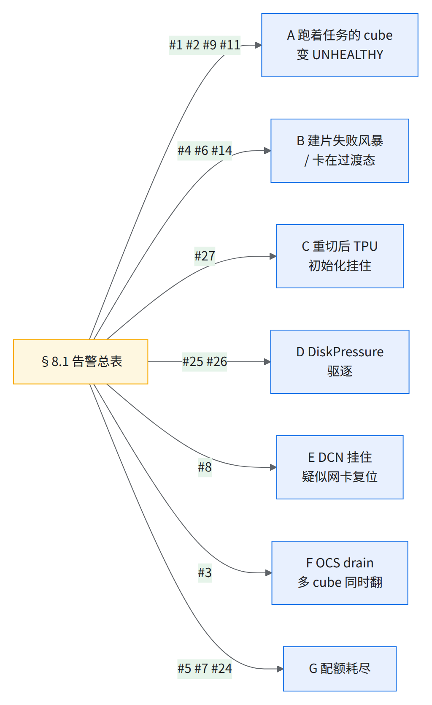
A. 跑着任务的 cube 变 UNHEALTHY
触发：Kueue 日志 EvictedDueToAdmissionCheck 或 Workload was evicted as there was no replacement for unhealthy node(s)。
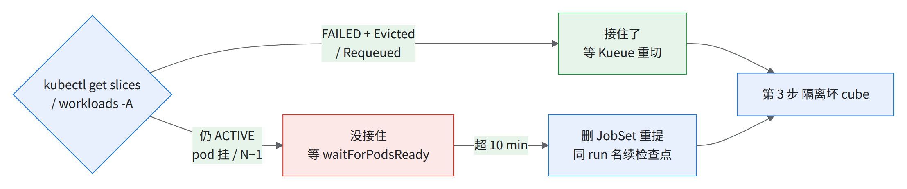
- 按图判断：VM 坏不会自动 deform，只靠 pod 挂驱逐；重切耗时见 07 §7.4。
- 恢复的坑：新 pod 跑分区一致性检查（C 第 1 步）；新 cube 上本地检查点被拒、退回持久层（丢到上一个 40 步倍数）→ 见经验教训第 24 条。
- 隔离：
05-isolate-cube.sh --reason "<case 号>" --execute <partition-id>。 - 取证：
kubectl get nodes -l cloud.google.com/gke-tpu-partition-4x4x4-id=<id> -o wide -L cloud.google.com/gke-tpu-partition-4x4x4-state；sub-block healthInfo；REPAIRING / UNSCHEDULED 维护。 - 修：原地修复无 holdback 经验教训第 3 条；REPAIRING > 12 h 或反复坏 → §8.5。修好、16 Ready + HEALTHY →
--undo --execute <id>。
B. SliceCreationFailed 风暴 / Slice 卡在过渡态
触发：日报第 5 段。
- 分类：
05-triage-slice.sh <slice>，对 05 §5.6：报错片段 含义 会自愈吗 AttachMIGsToMMIG failed ... already attached to '...'cube 还被上一个切片占着（多为删完立刻重建） 通常会（实测集中在约 20 min 内） ... active sub slice in it with external slice ID <名>-<hash8>，<名>不是default-jobset-…手工 Slice 占着 cube 常驻的不会（实测被常驻手工片挡住的任务重试到第 11 次、650 s 仍失败）；跑完就删的会（实测各重试 4–5 次，267 s 准入） FormSubsliceStep failed ... has an active sub slice/ConfigureAcceleratorTopology ... not supported ... Multi-MIG大片和 2x2x1 互相挡 删挡路的 sub-slice Error 412 ... not stable/400 resourceNotReady与 GCE 后台操作竞争 等 2–5 min SliceCreationFailed↔INCOMPLETE一分钟内来回cacheSyncUpbug不会；已有修复，所需版本向 Google 确认 - 手工片：删 JobSet，用
05-avoid-manual-slices.py重提；找主人删片 → 见经验教训第 33 条。 - 过渡态 > 60 min：带 deletionTimestamp 卡 ACTIVATING 的别自己改 status，找 Google；FAILED 不驱逐 → 删 JobSet 重提 → 见经验教训第 39 条、经验教训第 35 条。
- 删不掉：
05-delete-slice-chain.sh <slice>按顺序删；卡在DETACH_MIG_FROM_MULTI_MIG只有 Google 能清 → §8.5 附件 7。 - 风暴：先查告警 #7 和 #13，逐片处理没用。
C. 重切后 TPU 初始化挂住
触发：新 pod 全打出 TPU backend initialization is taking more than 60.0 seconds 后无输出；或 START_SESSION failed / Mismatch barrier id … PRE_START_SESSION_BARRIER。
- 30 秒确认（每个 replica 只应有 1 个 partition ID）：bash
JS=$JOBSET_NAME # 别的任务：kubectl get jobset -n $NS 的 NAME 列 N=$(kubectl get jobset $JS -n $NS -o jsonpath='{.spec.replicatedJobs[0].replicas}') # replica 数（= 片数） for r in $(seq 0 $((N-1))); do echo "replica $r: $(kubectl get pods -n $NS -l jobset.sigs.k8s.io/jobset-name=$JS,jobset.sigs.k8s.io/job-index=$r -o jsonpath='{range .items[*]}{.spec.nodeName}{"\n"}{end}' \ | xargs -I{} kubectl get node {} -o jsonpath='{.metadata.labels.cloud\.google\.com/gke-tpu-partition-4x4x4-id}{"\n"}' | sort -u | tr '\n' ' ')" done kubectl logs -n kueue-system -l app.kubernetes.io/name=kueue --since=15m --tail=-1 | grep -c "conflicting rank" - 别等 12 min barrier 超时，也别指望 RestartJobSet（大概率再跨 cube）：删 JobSet，
kubectl get pods -n $NS -l jobset.sigs.k8s.io/jobset-name=$JS为空后再重提（同 run 名续检查点）。 - 一片一个 cube 仍挂（演练中见过 1 次）：拿 GCE UUID 按经验教训第 43 条分诊。
💡C、D 同一根治：交付 JobSet 模板启动命令必须带
ulimit -c 0旧 pod 在宽限期内退干净，也不落 core 撑满启动盘。
D. DiskPressure 驱逐
触发：EvictedDueToNodeFailures。
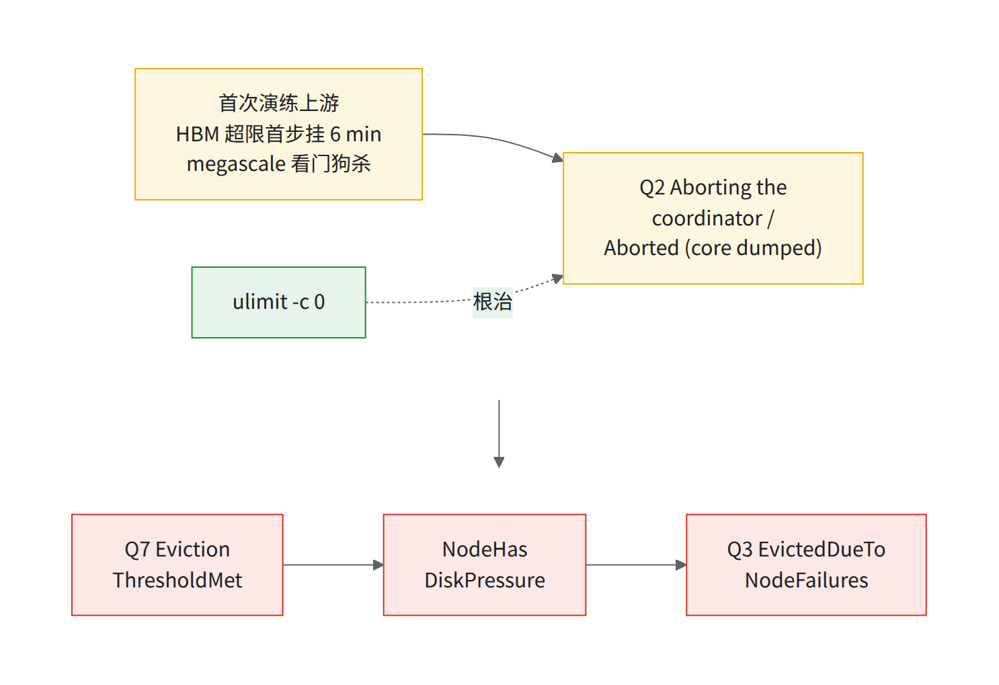
| 步骤 | 做法 |
|---|---|
| 1. 确认链条 | 按图核对驱逐链条（链条本身见经验教训第 42 条） |
| 2. 等压力解除 | kubectl describe node <n> | grep -A2 DiskPressure；重切后照 C 第 1 步查 |
| 3. 根治 | ulimit -c 0（或不落盘的 core_pattern；要 core 就写带 sizeLimit 的 emptyDir）；启动盘仅 94.3 GiB、无 Local SSD 经验教训第 22 条 |
| 4. 验证 | kubectl auth can-i create events -n $NS --as=system:serviceaccount:kueue-system:kueue-controller-manager 为 yes（告警 #29） |
E. DCN 挂住（疑似网卡复位）
触发：多片任务卡在首次跨片 all-reduce（Deadline Exceeded），单片正常；或 #17 响而无节点告警。
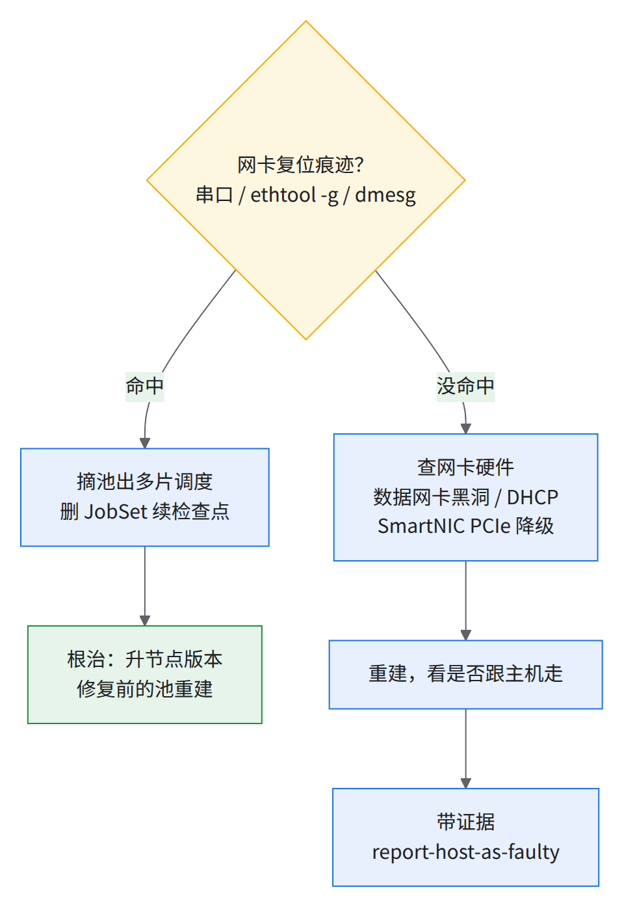
- 查：串口搜
NETDEV WATCHDOG|gve.*Performing reset；节点上ethtool -g eth0 | grep -i "tcp data split"、dmesg -T | grep -i "gve.*reset"（04-nic-check.sh批量做）。没命中就按主机网卡硬件排查（上图右支，见经验教训第 19 条）。 - 别做：运行时
ethtool -K关 tcp-data-split；调大--node-monitor-grace-period。修复版 1.35.13-gke.0+ / 1.36.4-gke.0+。 - 慢而不是挂：按经验教训第 45 条先取证再重建，区分经验教训第 20 条。
F. OCS drain：很多 cube 同时翻 DEGRADED / UNHEALTHY
触发：degradedInfraCount: 1 大面积出现；同组机位号（如每 cube 的 1、6、9、14 号机）有 drained link。
- 先开一个 case 交给 Google，再看 sub-block healthInfo。
- 一个机箱 DEGRADED：可用（需 ICI resiliency），SLO 算健康，照常调度；任务起不来就暂停提交。
- 一对交换机都 drain：全部 UNHEALTHY，整 pod 不可用。
- 事后：回 HEALTHY 后重建受影响切片。
实测集群标签把 DEGRADED 显示成 UNHEALTHY，只有 healthInfo 分得清。
- 一个事件一张 case，别开 144 张。
- 照常调度前提：书面约定
--default-slice-health-node-affinity=HEALTHY_AND_DEGRADED（09 D03）。暂停提交信号：TPU backend initialization is taking more than 60.0 seconds/STOP_SESSION failed；别按 cube 快速连发（先例致全 pod UNHEALTHY）。 - 事后：
healthyInfraCount恢复后重建，让 resilient routing 生效[需确认]。
G. 配额耗尽
触发：Quota exceeded for quota metric 'Read requests' and limit 'Read requests per minute per region'；Invalid slice state transition 'ACTIVE' -> 'MMIGHealthProbeFailed'。
| 配额 | 症状 | 先做 | 根治 | 页 |
|---|---|---|---|---|
| GCE 读请求 / 分钟 / region | 健康切片成批 Ready=Unknown、Unexpected partition state |
别批量删切片（先例：删了反把 detach 卡死，作业长时间停摆）；开 case；停自己的轮询器 | 控制器升到含修复的版本；交付前抬读配额（(MIG+MMIG)×12，144 cube 仅控制器约 3,456 reads/min [推断算术]） | 经验教训第 52 条 |
| multi-MIG 配额 | 新 super-slice 建不起 | 看用量 | 交付前 override 到千级 | 经验教训第 5 条 |
| HDB（启动盘）/ IP | 新池 / 新节点起不来 | 读 limit 也读 usage；清 Released PV | Cloud Quotas API 提额（最慢） | 经验教训第 5 条、经验教训第 21 条 |
| etcd / pod 数 | mvcc: database space exceeded、新池 0 节点 |
批量删完成态 pod；别成批建池 | JobSet 加 ttlSecondsAfterFinished；已满时控制面存储配额只有 Google 能调 |
经验教训第 53 条 |
| Cloud Logging API | 日志断档 | 按小项目给的配额（先例 600 MB） | 交付前提额 | 经验教训第 53 条 |
检查点
做完了（对应 README 交付清单 H）
- 加粗 7 条 + ★ 3 条告警按
08-alert-sources.yaml上线；串口日志与指标包已开；Q1–Q14 存好（§8.1） - 掉队阈值按功耗档分开写进告警 #18 和 soak 阈值文件（§8.1）
- Kueue events RBAC 已补（
kubectl auth can-i= yes）或 Q3 接进告警（§8.1 #29） - 自触发维护批次方案（每批 cube 数、批后健康 cube ≥132）与 Google 确认；「只删 Slice 不删池」书面确认（§8.2）
- 维护例外
tpu-node-freeze已加且 describe 可见；升级金丝雀集群；kueue-slice-controller 钉 digest，版本按 09 D10 升级并重跑 07 演练（§8.3） -
--probe挂 cron；完整版每天一次（别高频跑）；每周清单排进值班日历（§8.4） - 交付用 JobSet 模板带
ulimit -c 0和ttlSecondsAfterFinished（§8.6-C/D、§8.4） - §8.5「交付前要备好」到位
说得出（先自己答，再点开对答案）
为什么告警要自己做？
平台侧告警不一定比你先发现；健康信号会说谎- 举三种「看着健康其实不健康」。（网卡 2 s 复位节点不 NotReady；sub-block 每 4 h 假 DEGRADED；驱逐原因不在 events；429 把健康切片标 Unknown；池 RUNNING 但一台 unreachable）
P7 下为什么不能用默认档的掉队阈值？
P7 跨 host 极差 5.6–6.8% 且逐 host 固定，默认档 < 1%；和每台自己的 P7 基线比自触发维护一批要先做哪三件事？
排空任务、删 Slice、配额减去批量×64维护前删 Slice 还是删节点池？
只删 Slice，删池会丢主机映射节点池升级前为什么要先删切片？
升级会把 ACTIVE 切片变 FAILED 且不恢复重切后 TPU 初始化挂住，第一步查什么？
每个 replica 的 pod 是否在同一 partition；跨了就删 JobSet，旧 pod 删净再重提读配额打满时最不该做什么？
批量删切片出了问题第一步做什么？
按 §8.6 止血、取证，同时开 case 交给 Google，带齐 §8.5 附件表
交棒：回 README 交付清单 H 打勾；「谁值班、能不能 page、维护谁触发、坏了多久回来」要和使用方书面定，收在 09 交付前对齐清单（D05、D07、D18、D23）。